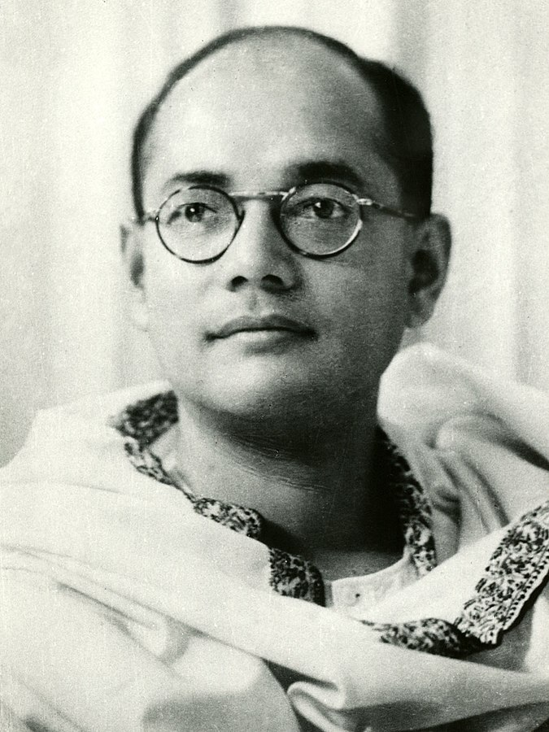

Subhas Chandra Bose

Subhas Chandra Bose, byname Netaji (Hindi: “Respected Leader”), (born c. January 23, 1897, Cuttack, Orissa [now Odisha], India—died August 18, 1945, Taipei, Taiwan?), Indian revolutionary prominent in the independence movement against British rule of India. He also led an Indian national force from abroad against the Western powers during World War II. He was a contemporary of Mohandas K. Gandhi, at times an ally and at other times an adversary. Bose was known in particular for his militant approach to independence and for his push for socialist policies.
The son of a wealthy and prominent Bengali lawyer, Bose studied at Presidency College, Calcutta (Kolkata), from which he was expelled in 1916 for nationalist activities, and the Scottish Churches College (graduating in 1919). He then was sent by his parents to the University of Cambridge in England to prepare for the Indian Civil Service. In 1920 he passed the civil service examination, but in April 1921, after hearing of the nationalist turmoils in India, he resigned his candidacy and hurried back to India. Throughout his career, especially in its early stages, he was supported financially and emotionally by an elder brother, Sarat Chandra Bose (1889–1950), a wealthy Calcutta lawyer and Indian National Congress (also known as the Congress Party) politician.
read more...